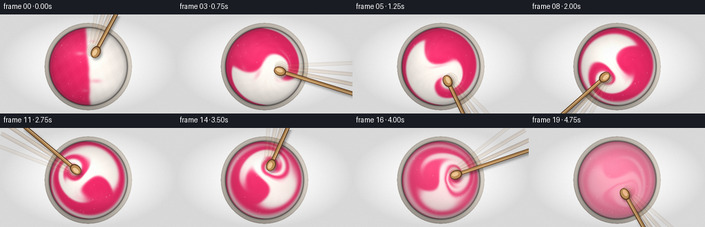
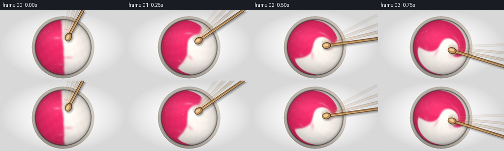
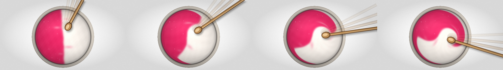
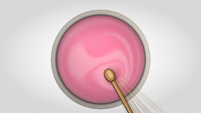
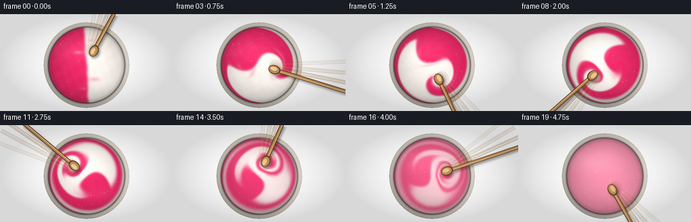
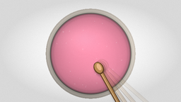

CODING AGENTS AS PIXEL WORLD MODELS
traex/DeepSeek-V4.1-Flash · phygen_125
点击播放 · 原生 RGB 像素
逐轮保存的候选
回放视频、检查图与代码变化。
每份候选均可单独播放。实际图片检查记录在下方工具轨迹中。
候选 01播放与检查图
点击播放 · 原生 RGB 像素

展开代码变化
--- 上一保存版本
+++ 本次保存版本
@@ -0,0 +1,426 @@
+from pathlib import Path
+
+import numpy as np
+from PIL import Image, ImageDraw, ImageFilter
+
+from artifact_io import save
+
+
+W, H = 512, 288
+OUT_W, OUT_H = 256, 144
+N_FRAMES = 20
+FPS = 4.0
+SUBSTEPS = 10
+DT = 1.0 / (FPS * SUBSTEPS)
+
+CX, CY = 256.0, 151.0
+OUTER_R = 128.0
+PAINT_R = 113.0
+
+PINK = np.array([239.0, 42.0, 104.0], dtype=np.float32) / 255.0
+WHITE = np.array([255.0, 248.0, 241.0], dtype=np.float32) / 255.0
+
+YY, XX = np.mgrid[0:H, 0:W].astype(np.float32)
+DX = XX - CX
+DY = YY - CY
+RADIUS = np.sqrt(DX * DX + DY * DY)
+THETA = np.arctan2(DY, DX)
+PAINT_MASK = RADIUS <= PAINT_R
+
+
+def smoothstep(edge0, edge1, x):
+ t = np.clip((x - edge0) / (edge1 - edge0), 0.0, 1.0)
+ return t * t * (3.0 - 2.0 * t)
+
+
+def sample_bilinear(field, sx, sy):
+ sx = np.clip(sx, 0.0, W - 1.001)
+ sy = np.clip(sy, 0.0, H - 1.001)
+ x0 = sx.astype(np.int32)
+ y0 = sy.astype(np.int32)
+ x1 = np.minimum(x0 + 1, W - 1)
+ y1 = np.minimum(y0 + 1, H - 1)
+ fx = sx - x0
+ fy = sy - y0
+ top = field[y0, x0] * (1.0 - fx) + field[y0, x1] * fx
+ bottom = field[y1, x0] * (1.0 - fx) + field[y1, x1] * fx
+ return top * (1.0 - fy) + bottom * fy
+
+
+def make_texture():
+ texture = (
+ 0.50
+ + 0.16 * np.sin(0.107 * XX + 0.149 * YY + 0.4)
+ + 0.11 * np.sin(0.247 * XX - 0.093 * YY + 1.6)
+ + 0.07 * np.sin(0.503 * XX + 0.387 * YY + 2.4)
+ + 0.045 * np.sin(0.943 * XX - 0.671 * YY + 0.7)
+ + 0.025 * np.sin(1.817 * XX + 1.331 * YY + 2.9)
+ )
+ return texture.astype(np.float32)
+
+
+def initial_paint():
+ yn = DY / PAINT_R
+ boundary = (
+ CX
+ + PAINT_R * (0.060 * yn)
+ + PAINT_R
+ * (
+ 0.012 * np.sin(4.7 * yn + 0.8)
+ + 0.007 * np.sin(10.9 * yn + 2.1)
+ + 0.0035 * np.sin(21.7 * yn + 0.2)
+ )
+ )
+ paint = 1.0 / (1.0 + np.exp((XX - boundary) / 2.2))
+ paint = paint.astype(np.float32)
+
+ # A few uneven tongues at the seam make the starting split feel like wet paint.
+ for px, py, rx, ry, strength in [
+ (232.0, 113.0, 17.0, 8.0, -0.34),
+ (278.0, 193.0, 22.0, 9.0, 0.28),
+ (247.0, 221.0, 12.0, 7.0, -0.18),
+ (268.0, 78.0, 16.0, 7.0, 0.16),
+ ]:
+ blob = np.exp(-(((XX - px) / rx) ** 2 + ((YY - py) / ry) ** 2) * 2.0)
+ paint += strength * blob
+ paint = np.clip(paint, 0.0, 1.0)
+ paint[~PAINT_MASK] = 0.5
+ return paint.astype(np.float32)
+
+
+def spoon_angle(frame_index):
+ progress = frame_index / (N_FRAMES - 1)
+ start = -1.08
+ return start + 2.0 * np.pi * 1.34 * progress + 0.055 * np.sin(4.0 * np.pi * progress)
+
+
+def velocity_field(t):
+ wall = smoothstep(0.0, 1.0, np.clip((PAINT_R - RADIUS) / (0.15 * PAINT_R), 0.0, 1.0))
+
+ omega = 2.35 * (0.91 + 0.09 * np.sin(2.1 * t + 0.4))
+ u = -DY * omega * wall
+ v = DX * omega * wall
+
+ # The moving spoon adds a compact vortex that folds the two colors together.
+ angle = spoon_angle(min(N_FRAMES - 1, t * FPS))
+ orbit = 0.42 * PAINT_R
+ bx = CX + orbit * np.cos(angle)
+ by = CY + orbit * np.sin(angle)
+ lx = XX - bx
+ ly = YY - by
+ local_env = np.exp(-(lx * lx + ly * ly) / (2.0 * 27.0 * 27.0)) * wall
+ local_strength = 4.0
+ u += -ly * local_strength * local_env
+ v += lx * local_strength * local_env
+
+ # A weaker counter-vortex opposite the spoon creates irregular folds.
+ ox = CX - 0.50 * orbit * np.cos(angle + 0.55)
+ oy = CY - 0.50 * orbit * np.sin(angle + 0.55)
+ qx = XX - ox
+ qy = YY - oy
+ other_env = np.exp(-(qx * qx + qy * qy) / (2.0 * 39.0 * 39.0)) * wall
+ u += qy * 1.65 * other_env
+ v -= qx * 1.65 * other_env
+
+ # Gentle radial breathing prevents the pattern from becoming a perfect spiral.
+ radial_wave = 6.5 * np.sin(3.0 * THETA + 2.4 * t + 0.5) * wall
+ u += np.cos(THETA) * radial_wave
+ v += np.sin(THETA) * radial_wave
+ return u, v
+
+
+def diffuse(field, amount, fill):
+ neighbor = field.copy()
+ neighbor[1:-1, 1:-1] = 0.25 * (
+ field[:-2, 1:-1] + field[2:, 1:-1] + field[1:-1, :-2] + field[1:-1, 2:]
+ )
+ field += amount * (neighbor - field)
+ field[~PAINT_MASK] = fill
+ return field
+
+
+def advance(paint, texture, t):
+ u, v = velocity_field(t)
+ bx = XX - u * DT
+ by = YY - v * DT
+ paint = sample_bilinear(paint, bx, by)
+ texture = sample_bilinear(texture, bx, by)
+ paint[~PAINT_MASK] = 0.5
+ texture[~PAINT_MASK] = 0.5
+ paint = diffuse(paint, 0.0012, 0.5)
+ texture = diffuse(texture, 0.00045, 0.5)
+ return paint, texture
+
+
+def build_background():
+ y_norm = YY / H
+ x_norm = XX / W
+ base = np.zeros((H, W, 3), dtype=np.float32)
+ top = np.array([40.0, 43.0, 48.0], dtype=np.float32)
+ bottom = np.array([21.0, 23.0, 27.0], dtype=np.float32)
+ for channel in range(3):
+ base[:, :, channel] = top[channel] * (1.0 - y_norm) + bottom[channel] * y_norm
+
+ stone = (
+ 2.3 * np.sin(0.035 * XX + 0.022 * YY)
+ + 1.4 * np.sin(0.091 * XX - 0.057 * YY + 1.3)
+ + 0.9 * np.sin(0.211 * XX + 0.163 * YY + 2.2)
+ )
+ base += stone[:, :, None]
+ base += (3.0 * (0.5 - x_norm))[:, :, None]
+
+ shadow = Image.new("L", (W, H), 0)
+ shadow_draw = ImageDraw.Draw(shadow)
+ shadow_draw.ellipse(
+ (CX - OUTER_R - 16, CY - OUTER_R + 8, CX + OUTER_R + 18, CY + OUTER_R + 31),
+ fill=185,
+ )
+ shadow = shadow.filter(ImageFilter.GaussianBlur(17))
+ shadow_array = np.asarray(shadow, dtype=np.float32)[:, :, None] / 255.0
+ base *= 1.0 - 0.62 * shadow_array
+
+ # Ceramic rim, inner wall, and a narrow reflected highlight.
+ alpha = smoothstep(OUTER_R + 0.7, OUTER_R - 1.0, RADIUS)
+ t = np.clip((RADIUS - PAINT_R) / (OUTER_R - PAINT_R), 0.0, 1.0)
+ rim = np.zeros((H, W, 3), dtype=np.float32)
+ rim[:] = np.array([211.0, 203.0, 192.0], dtype=np.float32) / 255.0
+ inner_shadow = 1.0 - 0.34 * np.exp(-((t - 0.08) / 0.10) ** 2)
+ outer_edge = 1.0 - 0.24 * smoothstep(0.93, 1.0, t)
+ directional = 0.90 + 0.105 * np.cos(THETA + 0.72) + 0.035 * np.cos(2.0 * THETA - 0.4)
+ rim *= (inner_shadow * outer_edge * directional)[:, :, None]
+ rim += (0.055 * np.exp(-((t - 0.57) / 0.09) ** 2))[:, :, None]
+ rim = np.clip(rim, 0.0, 1.0)
+ base = base * (1.0 - alpha[:, :, None]) + rim * alpha[:, :, None]
+
+ # Very thin dark seam between ceramic and paint.
+ seam = np.exp(-((RADIUS - PAINT_R) / 1.8) ** 2)
+ base *= 1.0 - 0.34 * seam[:, :, None]
+ return base
+
+
+BACKGROUND = build_background()
+
+
+def render_paint(paint, texture, frame_index):
+ c = paint[:, :, None]
+ color = WHITE[None, None, :] * (1.0 - c) + PINK[None, None, :] * c
+
+ rn = np.clip(RADIUS / PAINT_R, 0.0, 1.0)
+ surface_light = (
+ 1.02
+ - 0.18 * rn**2.3
+ + 0.028 * np.cos(THETA + 0.65) * rn
+ + 0.018 * np.cos(3.0 * THETA - 1.1) * rn**2
+ )
+ color *= surface_light[:, :, None]
+
+ # Embossed wet color boundaries.
+ gy, gx = np.gradient(paint)
+ gx *= 0.34
+ gy *= 0.34
+ norm = np.sqrt(gx * gx + gy * gy + 1.0)
+ nx = -gx / norm
+ ny = -gy / norm
+ nz = 1.0 / norm
+ lx, ly, lz = -0.43, -0.64, 0.64
+ diffuse_light = np.clip(nx * lx + ny * ly + nz * lz, 0.0, 1.0)
+ color += ((diffuse_light - 0.64) * 0.22)[:, :, None]
+
+ # Advected fine ridges and broad studio reflections make the surface read as wet.
+ fine = texture - 0.5
+ color += (0.040 * fine)[:, :, None]
+ broad_gloss = (
+ 0.070 * np.exp(-(((XX - (CX - 37.0)) / 76.0) ** 2 + ((YY - (CY - 46.0)) / 38.0) ** 2))
+ + 0.035 * np.exp(-(((XX - (CX + 45.0)) / 48.0) ** 2 + ((YY - (CY + 55.0)) / 22.0) ** 2))
+ )
+ color += broad_gloss[:, :, None]
+
+ # Meniscus: darker at the wall with a glossy lip just inside it.
+ edge_shadow = np.exp(-((PAINT_R - RADIUS) / 6.5) ** 2)
+ edge_lip = np.exp(-((PAINT_R - RADIUS - 4.3) / 2.0) ** 2)
+ color *= (1.0 - 0.30 * edge_shadow)[:, :, None]
+ color += (0.075 * edge_lip)[:, :, None]
+
+ # Sparse micro-bubbles, stable in the paint surface.
+ rng = np.random.default_rng(1927)
+ bubble_layer = Image.new("RGBA", (W, H), (0, 0, 0, 0))
+ bubble_draw = ImageDraw.Draw(bubble_layer)
+ for _ in range(26):
+ radius = np.sqrt(rng.random()) * (PAINT_R - 9.0)
+ angle = rng.random() * 2.0 * np.pi
+ px = CX + radius * np.cos(angle)
+ py = CY + radius * np.sin(angle)
+ size = rng.uniform(0.55, 1.55)
+ bubble_draw.ellipse(
+ (px - size, py - size, px + size, py + size),
+ fill=(255, 255, 255, int(rng.uniform(25, 62))),
+ )
+ bubble_array = np.asarray(bubble_layer, dtype=np.float32) / 255.0
+ color = color * (1.0 - bubble_array[:, :, 3:4]) + bubble_array[:, :, :3] * bubble_array[:, :, 3:4]
+
+ color = np.clip(color, 0.0, 1.0)
+ paint_img = Image.fromarray((color * 255.0).astype(np.uint8), "RGB")
+ paint_array = np.asarray(paint_img, dtype=np.float32) / 255.0
+ base = BACKGROUND.copy()
+ mask = smoothstep(PAINT_R + 0.5, PAINT_R - 1.2, RADIUS)
+ base = base * (1.0 - mask[:, :, None]) + paint_array * mask[:, :, None]
+ return base
+
+
+def _rotated_ellipse_points(cx, cy, long_axis, short_axis, angle, steps=72):
+ ca, sa = np.cos(angle), np.sin(angle)
+ theta = np.linspace(0.0, 2.0 * np.pi, steps, endpoint=False)
+ ex = long_axis * np.cos(theta)
+ ey = short_axis * np.sin(theta)
+ return [(cx + ex * ca - ey * sa, cy + ex * sa + ey * ca) for ex, ey in zip(ex, ey)]
+
+
+def draw_spoon_shape(draw, angle, scale, fill_main, fill_highlight, fill_edge, alpha):
+ ca, sa = np.cos(angle), np.sin(angle)
+ px, py = -sa, ca
+ orbit = 0.42 * PAINT_R
+ bx = CX + orbit * ca
+ by = CY + orbit * sa
+ sx = bx + 13.0 * ca
+ sy = by + 13.0 * sa
+ ex = bx + 238.0 * ca
+ ey = by + 238.0 * sa
+
+ def pt(x, y):
+ return (x * scale, y * scale)
+
+ edge = fill_edge + (alpha,)
+ wood = fill_main + (alpha,)
+ glint = fill_highlight + (int(alpha * 0.82),)
+
+ # Tapered handle with a dark outline.
+ draw.line([pt(sx, sy), pt(ex, ey)], fill=edge, width=int(12 * scale))
+ draw.line([pt(sx, sy), pt(ex, ey)], fill=wood, width=int(8 * scale))
+ draw.ellipse(
+ (pt(sx - 5.8, sy - 5.8)[0], pt(sx - 5.8, sy - 5.8)[1],
+ pt(sx + 5.8, sy + 5.8)[0], pt(sx + 5.8, sy + 5.8)[1]),
+ fill=wood,
+ )
+ draw.line(
+ [pt(sx + px * 1.7, sy + py * 1.7), pt(ex + px * 1.7, ey + py * 1.7)],
+ fill=glint,
+ width=max(1, int(2.0 * scale)),
+ )
+
+ # Spoon bowl, with an offset inner oval that reads as a shallow depression.
+ outer = _rotated_ellipse_points(bx, by, 18.0, 13.5, angle)
+ inner = _rotated_ellipse_points(bx - 1.0 * ca, by - 1.0 * sa, 15.2, 10.7, angle)
+ draw.polygon([pt(x, y) for x, y in outer], fill=edge)
+ draw.polygon([pt(x, y) for x, y in inner], fill=wood)
+ inner_glint = _rotated_ellipse_points(bx - 2.5 * ca - 2.0 * px, by - 2.5 * sa - 2.0 * py, 10.0, 5.4, angle)
+ draw.polygon([pt(x, y) for x, y in inner_glint], fill=glint)
+
+
+def render_spoon(frame_index):
+ scale = 2
+ layer = Image.new("RGBA", (W * scale, H * scale), (0, 0, 0, 0))
+ draw = ImageDraw.Draw(layer)
+ angle = spoon_angle(frame_index)
+
+ # Translucent trailing positions convey a fast, forceful stir at four frames per second.
+ for offset, alpha in [(0.34, 28), (0.21, 46), (0.10, 72)]:
+ draw_spoon_shape(
+ draw,
+ angle - offset,
+ scale,
+ (181, 133, 80),
+ (226, 180, 119),
+ (94, 61, 34),
+ alpha,
+ )
+
+ # Contact shadow.
+ shadow = Image.new("RGBA", (W * scale, H * scale), (0, 0, 0, 0))
+ shadow_draw = ImageDraw.Draw(shadow)
+ draw_spoon_shape(
+ shadow_draw,
+ angle,
+ scale,
+ (16, 12, 10),
+ (16, 12, 10),
+ (16, 12, 10),
+ 105,
+ )
+ shadow = shadow.filter(ImageFilter.GaussianBlur(7.0))
+ shifted = Image.new("RGBA", shadow.size, (0, 0, 0, 0))
+ shifted.alpha_composite(shadow, (8, 11))
+ layer = Image.alpha_composite(shifted, layer)
+ draw = ImageDraw.Draw(layer)
+
+ draw_spoon_shape(
+ draw,
+ angle,
+ scale,
+ (190, 143, 87),
+ (237, 194, 133),
+ (99, 65, 37),
+ 255,
+ )
+ return layer.resize((W, H), Image.Resampling.LANCZOS)
+
+
+def finish_frame(base, frame_index):
+ image = np.clip(base, 0.0, 1.0)
+ spoon = render_spoon(frame_index)
+ spoon_array = np.asarray(spoon, dtype=np.float32) / 255.0
+ image = image * (1.0 - spoon_array[:, :, 3:4]) + spoon_array[:, :, :3] * spoon_array[:, :, 3:4]
+
+ # Global vignette and fine film grain.
+ nx = (XX - W * 0.5) / (W * 0.5)
+ ny = (YY - H * 0.5) / (H * 0.5)
+ vignette = 1.0 - 0.15 * np.clip(nx * nx + ny * ny, 0.0, 1.0)
+ image *= vignette[:, :, None]
+ rng = np.random.default_rng(4000 + frame_index)
+ grain = rng.normal(0.0, 0.0048, (H, W, 1)).astype(np.float32)
+ image += grain
+ image = np.clip(image, 0.0, 1.0)
+
+ out = Image.fromarray((image * 255.0).astype(np.uint8), "RGB")
+ out = out.resize((OUT_W, OUT_H), Image.Resampling.LANCZOS)
+ return np.asarray(out, dtype=np.uint8)
+
+
+def generate():
+ paint = initial_paint()
+ texture = make_texture()
+ frames = []
+
+ # Frame zero preserves the two freshly combined, equal-volume colors.
+ frames.append(finish_frame(render_paint(paint, texture, 0), 0))
+
+ blend_schedule = {
+ 13: 0.018,
+ 14: 0.040,
+ 15: 0.070,
+ 16: 0.110,
+ 17: 0.180,
+ 18: 0.310,
+ 19: 0.570,
+ }
+
+ for frame_index in range(1, N_FRAMES):
+ for substep in range(SUBSTEPS):
+ t = (frame_index - 1 + substep / SUBSTEPS) / FPS
+ paint, texture = advance(paint, texture, t)
+
+ blend = blend_schedule.get(frame_index, 0.0)
+ if blend:
+ paint += blend * (0.5 - paint)
+ paint[~PAINT_MASK] = 0.5
+
+ base = render_paint(paint, texture, frame_index)
+ frames.append(finish_frame(base, frame_index))
+
+ return np.stack(frames, axis=0)
+
+
+if __name__ == "__main__":
+ case_dir = Path(__file__).resolve().parent
+ frames = generate()
+ save(frames, case_dir)
+ print(f"wrote {len(frames)} frames to {case_dir}")
候选 02播放与检查图
点击播放 · 原生 RGB 像素

展开代码变化
--- 上一保存版本
+++ 本次保存版本
@@ -71,7 +71,7 @@
+ 0.0035 * np.sin(21.7 * yn + 0.2)
)
)
- paint = 1.0 / (1.0 + np.exp((XX - boundary) / 2.2))
+ paint = 1.0 / (1.0 + np.exp(np.clip((XX - boundary) / 2.2, -60.0, 60.0)))
paint = paint.astype(np.float32)
# A few uneven tongues at the seam make the starting split feel like wet paint.
@@ -259,7 +259,7 @@
color = color * (1.0 - bubble_array[:, :, 3:4]) + bubble_array[:, :, :3] * bubble_array[:, :, 3:4]
color = np.clip(color, 0.0, 1.0)
- paint_img = Image.fromarray((color * 255.0).astype(np.uint8), "RGB")
+ paint_img = Image.fromarray((color * 255.0).astype(np.uint8))
paint_array = np.asarray(paint_img, dtype=np.float32) / 255.0
base = BACKGROUND.copy()
mask = smoothstep(PAINT_R + 0.5, PAINT_R - 1.2, RADIUS)
@@ -380,7 +380,7 @@
image += grain
image = np.clip(image, 0.0, 1.0)
- out = Image.fromarray((image * 255.0).astype(np.uint8), "RGB")
+ out = Image.fromarray((image * 255.0).astype(np.uint8))
out = out.resize((OUT_W, OUT_H), Image.Resampling.LANCZOS)
return np.asarray(out, dtype=np.uint8)
@@ -394,13 +394,15 @@
frames.append(finish_frame(render_paint(paint, texture, 0), 0))
blend_schedule = {
- 13: 0.018,
- 14: 0.040,
- 15: 0.070,
- 16: 0.110,
- 17: 0.180,
- 18: 0.310,
- 19: 0.570,
+ 11: 0.010,
+ 12: 0.025,
+ 13: 0.050,
+ 14: 0.085,
+ 15: 0.140,
+ 16: 0.230,
+ 17: 0.390,
+ 18: 0.660,
+ 19: 0.940,
}
for frame_index in range(1, N_FRAMES):
@@ -412,6 +414,9 @@
if blend:
paint += blend * (0.5 - paint)
paint[~PAINT_MASK] = 0.5
+ if frame_index == N_FRAMES - 1:
+ # The prompt calls for the endpoint to be completely blended.
+ paint = np.full_like(paint, 0.5)
base = render_paint(paint, texture, frame_index)
frames.append(finish_frame(base, frame_index))
可观测工具轨迹
实际执行的命令与返回图片。
命令 1exit 0
/bin/bash -c "pwd && rg --files -g 'prompt.txt' -g 'GENERATION_RULES.md' -g 'task_spec.json' -g '"'!**/.git/**'"'"
命令 2exit 0
/bin/bash -c 'ls -la'
命令 3exit 0
/bin/bash -c 'git status --short'
命令 4exit 0
/bin/bash -c 'cat prompt.txt'
命令 5exit 0
/bin/bash -c 'cat GENERATION_RULES.md'
命令 6exit 0
/bin/bash -c 'cat task_spec.json'
命令 7exit 0
/bin/bash -c 'cat artifact_io.py'
命令 8exit 0
/bin/bash -c 'python generate.py'
命令 9exit 0
/bin/bash -c "find . -maxdepth 2 -type f -printf '%P %s bytes\\n' | sort"
命令 10exit 0
/bin/bash -c "python - <<'PY'
import numpy as np
from PIL import Image
im=np.asarray(Image.open('frames/19.png')).astype(float)
cx,cy=128,75.5; y,x=np.mgrid[:144,:256]; r=((x-cx)**2+(y-cy)**2)**.5
m=r<55
print('mean',im[m].mean((0)), 'std',im[m].std((0)))
PY"命令 11exit 0
/bin/bash -c "python - <<'PY'
import numpy as np
z=np.load('pixels.npz')['pixels']
print(z.shape,z.dtype,z.min(),z.max())
for i in [0,5,10,15,19]: print(i, hex(int(z[0,0,i])))
PY"命令 12exit 0
/bin/bash -c "python - <<'PY'
from PIL import Image
im=Image.open('transition_check.png')
# actual layout from artifact_io: 4 frames at y=21 each 256x144, second row is first frame enlarged to 256x144
im.crop((0,21,1024,165)).resize((1024,144)).save('.tmp/first4.png')
PY"命令 13exit 0
/bin/bash -c 'python generate.py'
命令 14exit 0
/bin/bash -c "python - <<'PY'
import json
from pathlib import Path
import numpy as np
from PIL import Image
spec=json.loads(Path('task_spec.json').read_text())
frames=sorted(Path('frames').glob('*.png'))
pix=np.load('pixels.npz')['pixels']
assert len(frames)==spec['frames']==20
assert pix.shape==(spec['height'],spec['width'],spec['frames'])
assert all(Image.open(p).size==(spec['width'],spec['height']) for p in frames)
assert Path('index.html').stat().st_size>100000
assert Path('generate.py').is_file()
print('validated', pix.shape, pix.dtype, len(frames), 'frames', 'html', Path('index.html').stat().st_size, 'bytes')
PY"视觉工具实际返回图片 1

视觉工具实际返回图片 2

视觉工具实际返回图片 3

视觉工具实际返回图片 4

视觉工具实际返回图片 5

视觉工具实际返回图片 6

保存候选 2 份；完成命令 14 次；可验证图片返回 6 张。原始 API 响应与完整日志保留在本地。